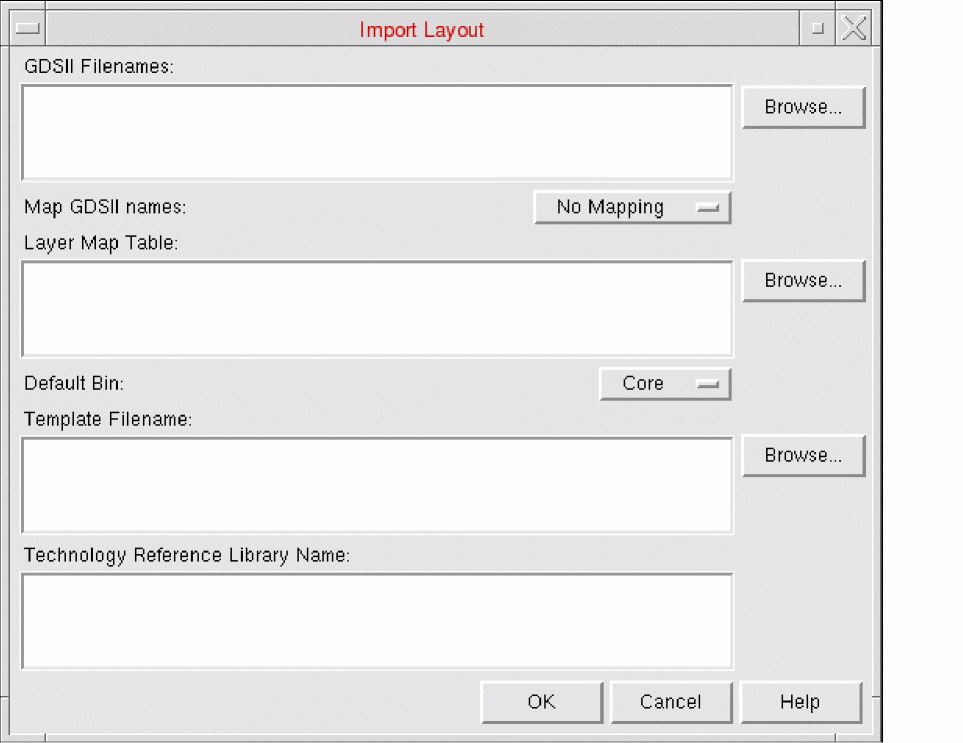
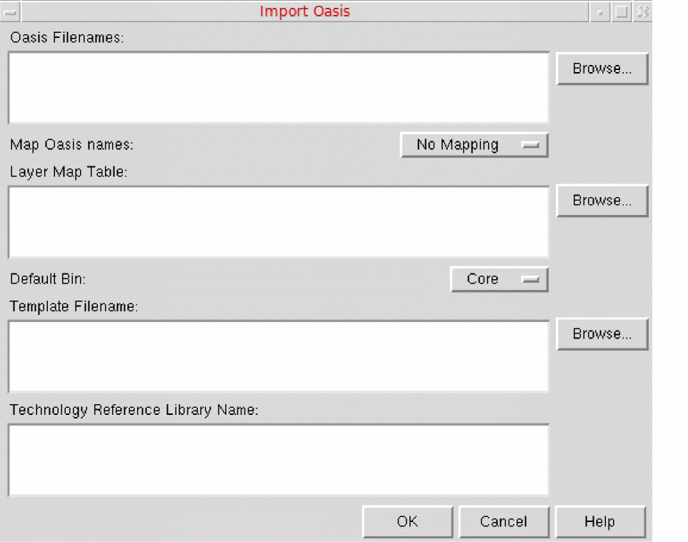

Importing GDSII Information in Abstract Generator
The Import Layout form creates cellviews from existing layout information in GDSII format. The OpenAccess version of Abstract Generator uses XStream to import GDSII information.
-
Choose File – Import – Stream (GDSII) to start this command or click the Layout button in the toolbar.
This displays the Import Layout form.
 - In GDSII Filenames, specify the names of the GDSII files that you want to import. Use the Browse button to help you locate the files.
- In Map GDSII names, you can specify whether you want GDSII names mapped to upper case, lower case, or to not be mapped at all.
- In Layer Map Table , specify the name of the layer map file you want to import. Use the Browse button to help you locate the file. A layer map file is an ASCII file that maps the layer numbers and data types used in the Stream file to the layer-purpose pairs in the OpenAccess database. See OpenAccess database.
-
In Default Bin, you can select the bin into which the cells are imported. This option applies only to any new library cells being imported. Cells imported previously are not moved.
After importing, if you select the Default Bin in the main window, you see the imported cells listed in the right-hand pane. The check mark in the Layout column indicates the presence of a layout view. Cells are also checked for valid layers. - In Template Filename, you can specify a stream template file to be imported into Abstract Generator. Use the Browse button to help you locate template files.
-
In Technology Reference Library Name, you can specify one or more valid reference technology libraries. The specified referenced technology libraries must be present in the
cds.libfile and must be readable.
Enabling Coloring While Importing GDSII Information
Use the ImportGDSIIEnableColoring to specify whether coloring needs to be enabled while importing GDSII data. By default, the option is set to "true".
absSetOption("ImportGDSIIEnableColoring" "true")
For color layouts to be generated, in addition to setting the ImportGDSIIEnableColoring option to "true", ensure that layer map file includes mask information.
Related Topics
lmporting OASIS Data in Abstract Generator
The Import Oasis form creates cellviews from existing layout information in OASIS format.
-
Choose File – Import – Stream (Oasis) to start this command.
This displays the Import Oasis form.
 - In Oasis Filenames, specify the names of the OASIS files that you want to import. Use the Browse button to help you locate the files.
- In Map Oasis names, you can specify whether you want OASIS names mapped to uppercase, lowercase, or not to be mapped at all.
- In Layer Map Table, specify the name of the layer map file you want to import. Use the Browse button to help you locate the file. A layer map file is an ASCII file that maps the layer numbers and data types used in the Stream file to the layer-purpose pairs in the OpenAccess database.
-
In Default Bin, you can select the bin into which the cells are imported. This option applies only to any new library cells being imported. Cells imported previously are not moved.
After importing, if you select the Default Bin in the main window, you see the imported cells listed in the right-hand pane. The check mark in the Layout column indicates the presence of a layout view. Cells are also checked for valid layers. - In Template Filename, specify a stream template file to be imported into Abstract Generator. Use the Browse button to help you locate template files.
-
Specify one or more valid reference technology libraries in the Technology Reference Library Name field. The specified referenced technology libraries must be present in the
cds.libfile and must be readable. The subsectiontechControl, added to the technology file for ITDB (Incremental Technology Database) support, necessitates the specification of a set of ordered reference libraries to allow inheritance from these libraries.
Related Topics
Return to top